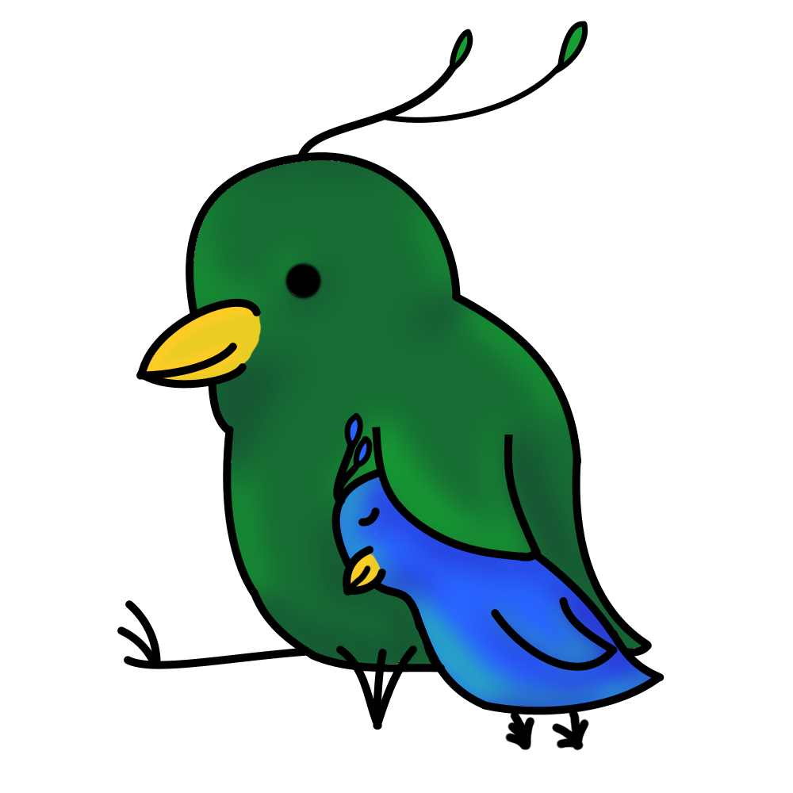

The above, annoyingly autoplayed, song is called Twinkle Twinkle.
It is played by an amazing person on the cello ^-^

I began playing the violin in the third grade, during a time that I was trying any activity I could.
I instantly fell in love with it; as my classmates gradually dropped the program, I became the only
one in my grade to play. When I reached highschool, I was tempted to join the specialized academy (aka major)
for music. But, I chickened out and went for IT instead. It all worked out in the end though, because after
a single year without my violin I gave in. I joined the school orchestra. While I wasn't anywhere near as good
as my classmates who were entirely focused on their instruments, I had fun. I like to leave the serious music
to the professionals and just have fun myself. When I entered NJIT, I was excited to find that it has a chamber
ensemble. I immedietly joined and was pleasantly surprised to find that most people there had the same idea
of playing music as me. None of us are focused on music as we're all in science fields. All of us just enjoyed
music as a fun activity and stress reliever. I hope to continue in the future, even if my career takes me far
away from music.
So here I want to talk about other music stuff I do. Singing (band), flute (jazz ensemble), random stuff i like, etc